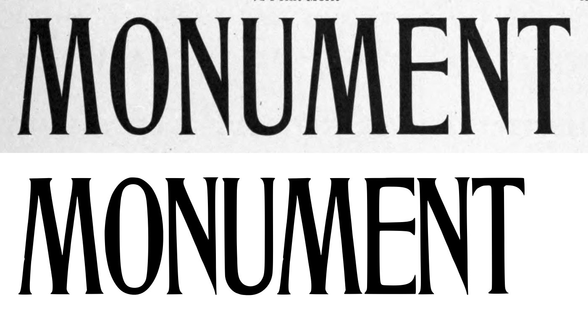
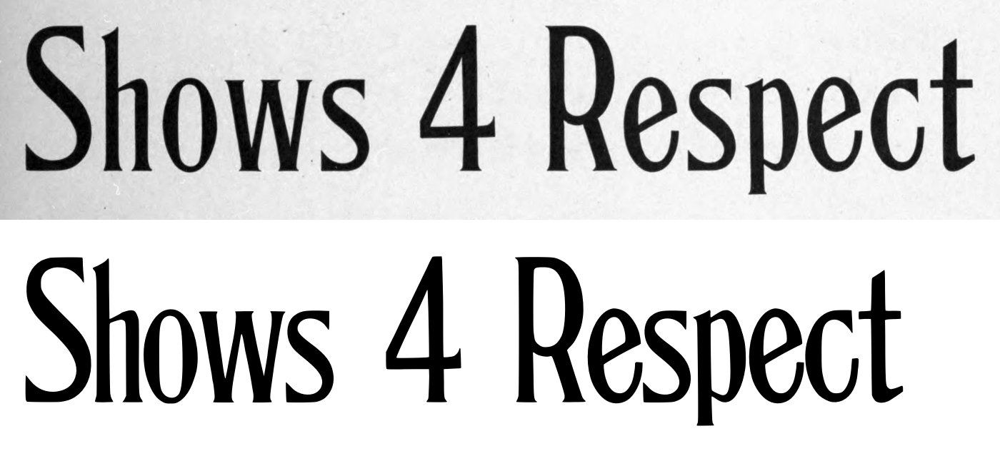
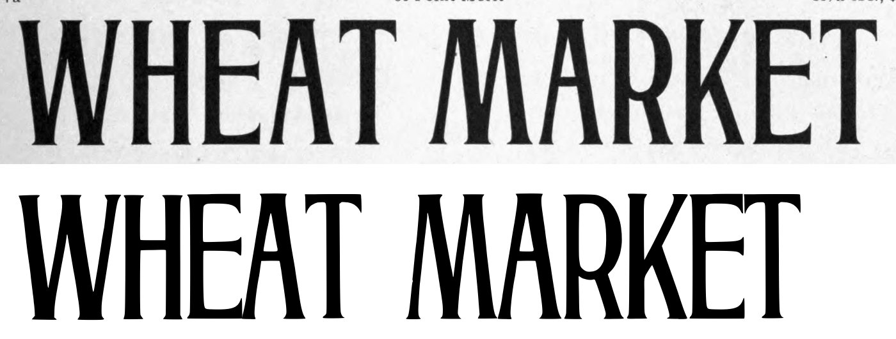
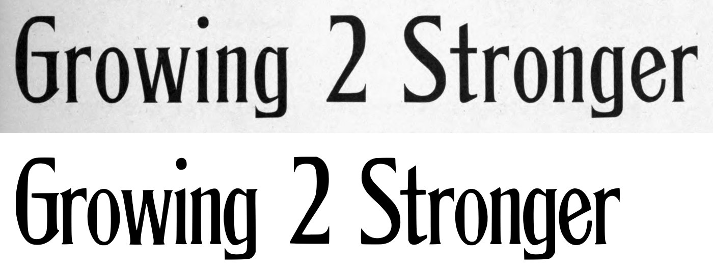
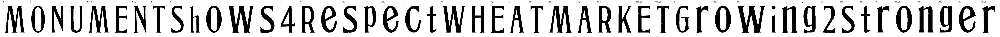

Gray letters are constructed, not traced.


0 warnings, 1 notes.
[
{
"level": "info",
"check": "specks",
"glyph": "T.60pt_2",
"value": 1,
"note": "marks beside the letter were recorded, not cut"
}
]
{
"407:72pt": {
"n_caps": 10,
"cap_height_px": 334.5,
"cap_source": "caps",
"baseline_px": 1893.0,
"baselines": {
"4": 1893.0,
"5": 2296.0
},
"glyphs": [
"M",
"O",
"N",
"U",
"M.72pt",
"E",
"N.72pt",
"T",
"S",
"h",
"o",
"w",
"s",
"four",
"R",
"e",
"s.72pt",
"p",
"e.72pt",
"c",
"t"
],
"x_height_px": 217.5,
"figure_height_px": 335,
"stem_px": 26.5,
"scale": 2.09268,
"stem_units": 55.5,
"x_height": 455,
"figure_height": 701
},
"407:60pt": {
"n_caps": 13,
"cap_height_px": 279,
"cap_source": "caps",
"baseline_px": 973,
"baselines": {
"2": 973,
"3": 1317.5
},
"glyphs": [
"W",
"H",
"E.60pt",
"A",
"T.60pt",
"M.60pt",
"A.60pt",
"R.60pt",
"K",
"E.60pt_2",
"T.60pt_2",
"G",
"r",
"o.60pt",
"w.60pt",
"i",
"n",
"g",
"two",
"S.60pt",
"t.60pt",
"r.60pt",
"o.60pt_2",
"n.60pt",
"g.60pt",
"e.60pt",
"r.60pt_2"
],
"x_height_px": 181,
"figure_height_px": 279,
"stem_px": 30,
"scale": 2.50896,
"stem_units": 75.3,
"x_height": 454,
"figure_height": 700
}
}
{
"archive_id": "bookoftypespecim00barnrich",
"title": "Book of type specimens. Comprising a large variety of superior copper-mixed types, rules, borders, galleys, printing presses, electric-welded chases, paper and card cutters, wood goods, book binding machinery etc., together with valuable information to the craft. Specimen book no.9",
"creator": [
"Barnhart, bros. & Spindler, firm, type founders, Chicago",
"De Young family",
"De Young, Charles, 1881-"
],
"publisher": "Chicago, Barnhart bros. & Spindler",
"date": "[1907]",
"ppi": 400,
"url": "https://archive.org/details/bookoftypespecim00barnrich",
"copyright_status": "NOT_IN_COPYRIGHT",
"contributor": "University of California Libraries",
"leaves": [
406,
407
]
}